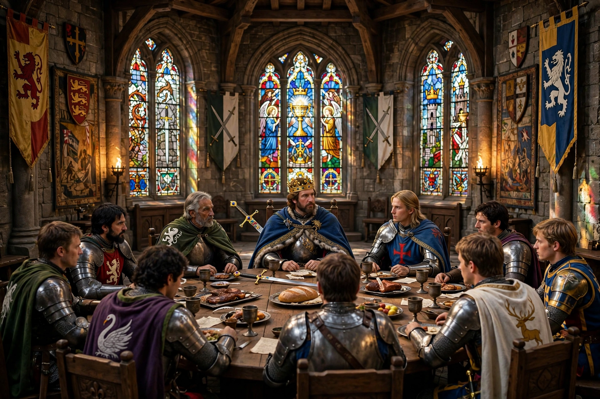

King Arthur
King Arthur (Welsh: Brenin Arthur) is a legendary king of Britain who, according to medieval histories and romances, led the defence of Britain against Saxon invaders in the late 5th and early 6th centuries. The sparse details of Arthur's story come mainly from Welsh and Breton folklore, the 9th-century Historia Brittonum, the 10th-century Annales Cambriae, and the work of the 12th-century cleric Geoffrey of Monmouth, whose Historia Regum Britanniae popularised the legend across Europe.

| Title | King of Britain |
|---|---|
| Predecessor | Uther Pendragon |
| Spouse | Guinevere |
| Weapon | Excalibur |
| Residence | Camelot |
| Adviser | Merlin |
Historicity
Modern historians generally regard Arthur as a legendary figure rather than a historical person, though debate has continued since the Renaissance. Early Welsh texts depict him as a warrior leader rather than a king, and his exploits grow ever more marvellous in later tradition — giant-slayer, raider of the Otherworld, and emperor in Geoffrey's telling.
The medieval legend
Geoffrey of Monmouth presented Arthur as the son of Uther Pendragon, conceived with the aid of Merlin's magic at Tintagel. French romancers of the twelfth century, notably Chrétien de Troyes, added Lancelot, Camelot, and the quest for the Holy Grail. The great prose cycles wove these threads together: the love of Lancelot and Queen Guinevere, the Grail quest achieved by Galahad, and the final ruin of the Round Table through the treason of Mordred. Arthur, mortally wounded at the Battle of Camlann, is carried to the Isle of Avalon, whence Welsh and Breton hope long expected him to return — the "once and future king".
Culhwch and Welsh tradition
In the early Welsh tale Culhwch and Olwen (c. 1100), Arthur presides over a vast court at Celliwig in Cornwall and leads his warriors on hunts and quests, including the hunt for the giant boar Twrch Trwyth. This older Arthur is head of a band of heroes with marvellous gifts, rooted in Welsh tradition rather than chivalric romance.
Later literature and legacy
Sir Thomas Malory's Le Morte d'Arthur (1485) fixed the legend's shape for later ages. The 19th-century Celtic Revival and Tennyson's Idylls of the King revived interest, and Arthur remains a pervasive figure in modern literature, film, and popular culture.
See also
References
- Higham, N. J., King Arthur: Myth-Making and History, Routledge, 2002.
- Green, Thomas, Concepts of Arthur, Tempus, 2007.
- Lacy, Norris J. (ed.), The New Arthurian Encyclopedia, Garland, 1996.